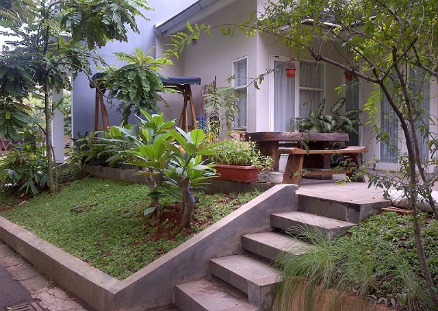

Adapun cara menghindari banjir yang seharusnya dilakukan sejak
dini, yaitu membangun rumah panggung atau lebih tinggi dari
permukaan jalan. Tips ini berlaku bagi Anda yang hendak mencari
tempat tinggal, namun terpaksa harus berada di lingkungan
langganan atau rawan banjir. Membangun rumah panggung atau lebih
tinggi dari jalan dapat meminimalisir risiko air masuk rumah
terlalu banyak.
Jadi meminimalisir pula risiko merusak perabot dan elektronik di
dalam rumah. Bayangkan jika tinggi airnya 100 cm, tetapi tinggi
bagian bawah rumah Anda adalah 150 cm, maka air pun dipastikan
tidak sampai masuk.
Proses meninggikan rumah memang membutuhkan waktu tidak sebentar
dan biaya yang dikeluarkan pun lumayan besar. Namun cara ini
termasuk paling ampuh untuk mencegah air masuk rumah dan
menenggelamkan isi di dalamnya. Anda bisa bertanya pada tukang di
sekitar domisili Anda terkait cara membuat rumah jadi lebih tinggi
dari permukaan jalan.
Bencana banjir sangat susah dihindari. Maka dari itu, sebaiknya
kita perlu melakukan tindakan pencegahan sejak dini. Cara paling
mudahnya, yakni usahakan tidak membuang sampah sembarangan, rajin
membersihkan selokan maupun sungai, serta memperbanyak pepohonan
di lingkungan sekitar.
Bangun Rumah Panggung atau Lebih Tinggi dari Jalan
